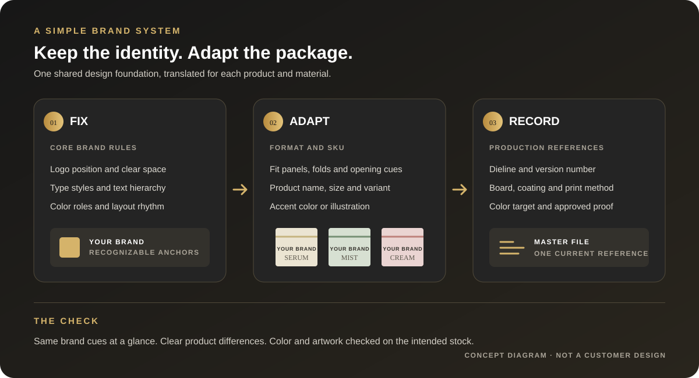
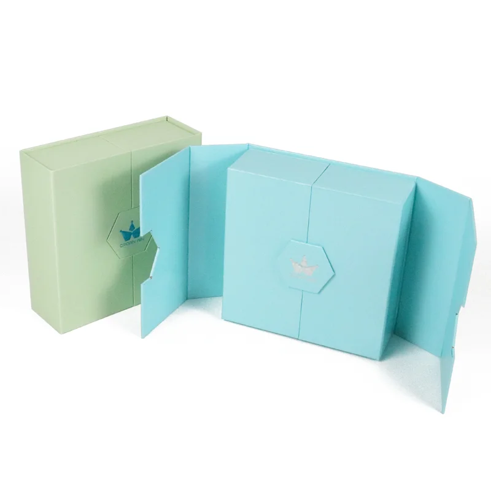
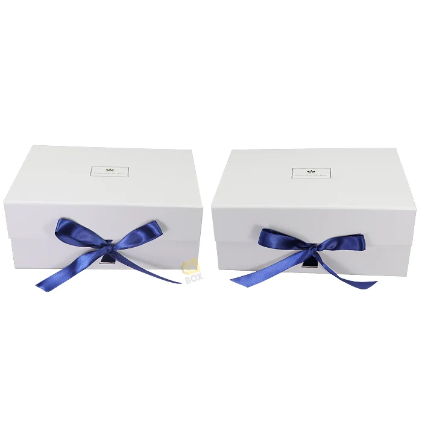

How to Keep Packaging Consistent Across a Product Line
A practical framework for boxes, mailers, tissue, inserts and product variants that need to feel like one brand.
Short answer: set a few brand rules that stay fixed, then adapt the layout to each package format and product variant. Keep logo use, type hierarchy and core color roles recognizable; let product names, scent or shade cues, panel layouts and structures change when they need to. Record the artwork, material, print reference and approved version for every item.

Product examples: different formats need different layouts
These existing product photos show three distinct box structures. Each format presents different panels, opening cues and usable space, so a shared brand system still needs artwork adapted to the right dieline.

A broad lid panel with a clear opening edge.

A split front and a different panel sequence.

A closure detail that becomes part of the front view.
Image note: These are separate format examples from Crown Win’s existing product gallery; they do not represent one coordinated customer collection.
What are packaging buyers and designers discussing on Reddit?
In an October 2026 r/PackagingDesign discussion, a brand owner described a familiar scaling problem: once boxes, mailers, stickers, tissue and insert cards were designed separately, logo placement and color started to drift. Replies recommended setting shared rules for color, typography, hierarchy and placement, and keeping a master folder with dielines and production notes.
A separate retail packaging critique raised a related point: when colors or graphics change across a product range, the brand and product name still need to read clearly on the panel customers are likely to see. That discussion is a design critique, not a regulatory reference; required product copy depends on the market and product category.
These are individual Reddit conversations, not a survey of buyers or proof that one design formula improves sales. They do point to a useful production question: which details must look related, and which details must be adjusted for the package in front of you?
What should stay the same, and what should change?
| Set a shared rule for | Adapt for the item | Record for production |
|---|---|---|
| Approved logo versions, clear space and usual placement | Logo size and panel position when a box, bag, sleeve or insert has different usable space | Current logo file, scale and placement notes on each dieline |
| Type families, text hierarchy and core color roles | Product name, scent, shade, size, collection art and variant accent | Artwork revision, print process, substrate and agreed color reference |
| Layout rhythm, graphic style and voice | Panel sequence, folds, opening direction, insert format and mandatory copy area | Approved dieline, material/finish specification and sign-off version |
Consistency does not require every box to use the same front panel or exact color. It means the shopper can recognize the brand while still distinguishing the product. Check the erected package from the viewing angle and shelf position that matter; an element that crosses a fold or wraps around a corner can become difficult to read.
Why can the same color look different on another package?
A color value on a screen is not a complete print specification. The paper surface and print method affect the result. Pantone explains that the same spot-color formula can look quite different on coated and uncoated paper because the ink interacts differently with each surface. Its coated and uncoated labels are separate printed references, not interchangeable screen swatches.
For a brand color used on coated box wrap, uncoated stock, kraft, tissue or labels, ask the print partner how that color will be produced on each intended material. Agree a physical reference or proof for the important substrates and finishes, then keep the result with the item’s specification. A single hex or CMYK value alone does not guarantee a visual match across different stocks.
How do you build a packaging system that is easy to reuse?
- Choose the recognition anchors. Select the small set of elements a customer should recognize first: logo treatment, typography, color roles, a graphic device or a consistent information hierarchy. Avoid declaring every decorative detail mandatory.
- Make a variant matrix. List the products, sizes, scents or shades and the package formats they use. Mark what changes on each version, and keep product names, SKU codes, barcodes and market copy tied to the correct item.
- Design against the real format. Use the current dieline for each box, sleeve, bag or insert. Place essential identity and product information on panels that remain readable after folding and assembly. Keep the brand system consistent without forcing one flat artwork layout onto every shape.
- Save production details with the art. For every item, retain its dieline revision, artwork file, board or paper, coating, print method, color reference, finish and approval record. Give files clear names so an old seasonal version is not mistaken for the current one.
- Review printed examples together. Compare the actual items side by side under the same viewing conditions. Check logo visibility, product-name hierarchy, variant distinctions and color on each intended material. Approve the relevant physical sample before the order moves into production.
A short brand-system checklist
- One current logo package, including small-space or one-color versions where needed.
- A short guide to fonts, hierarchy, spacing, logo clear space and color roles.
- A product/SKU matrix showing exactly which names, codes, artwork and accents vary.
- A separate current dieline and production specification for each format.
- Color references and approved proofs matched to the actual substrate and finish.
- A revision owner, file-naming rule and record of which version was approved.
If several teams or suppliers work on the range, nominate one person to maintain the master reference and approve changes. That prevents a new sticker, insert or seasonal box from quietly becoming a second version of the brand.
Frequently asked questions
Do all products in a range need the same packaging color?
No. A brand can use a shared core palette while changing an accent, illustration or label to distinguish variants. Keep the recognition cues and product naming clear, and approve colors on the materials that will actually be printed.
Can one artwork file work for a box, mailer and insert card?
The same design rules can guide all three, but each item needs artwork adapted to its own dimensions, panels, folds and production requirements. Treat a shared visual system and a shared production file as different things.
Is a digital proof enough to approve color consistency?
A digital proof can show layout and copy placement, but it cannot establish the appearance of every printed stock or finish. If color is important, agree on a suitable physical reference for the intended material and process.
What should I send a packaging supplier?
Send the product and SKU list, package dimensions or current dieline, approved logo and artwork, material and finish preferences, destination market and any color reference. For a broader request checklist, see what to include in a packaging brief; for multi-item insert planning, see the custom box insert guide.
Sources and limits
- r/PackagingDesign: “How do you keep all your packaging looking like the same brand?” — discussion about keeping a growing mix of packaging pieces visually consistent.
- r/PackagingDesign: “Retail Packaging” — a product-packaging critique that discusses brand and product-name legibility across changing scent variants and package panels.
- Pantone Help Center: coated and uncoated print references — explains why the same spot color can look different on coated and uncoated paper.
Reddit comments reflect individual experience and opinion; they are used here to identify practical questions, not to establish market-wide preferences or sales results. Verify mandatory copy and color acceptance requirements for the target market, product and print process with the responsible specialist.
For related planning, read how to choose a custom box insert and how custom cosmetic box quotes are built.
Build a clearer packaging brief.
Share your product variants, package formats, dimensions, artwork and material references.
→ Request a Custom Quote